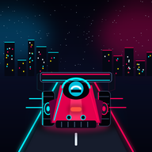

NEON DRIVE
YOU ARE OFFLINE
Multiplayer needs an internet connection. After NEON DRIVE has finished its first online download, Solo Practice is available offline from the cached game.
OPEN THE GAME
Multiplayer needs an internet connection. After NEON DRIVE has finished its first online download, Solo Practice is available offline from the cached game.
OPEN THE GAME